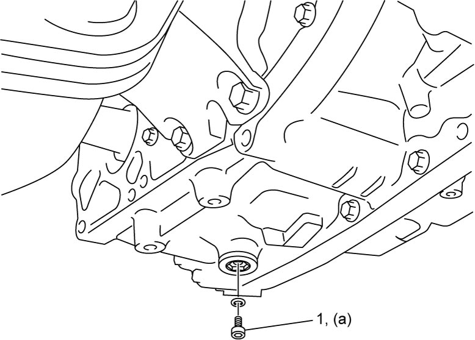
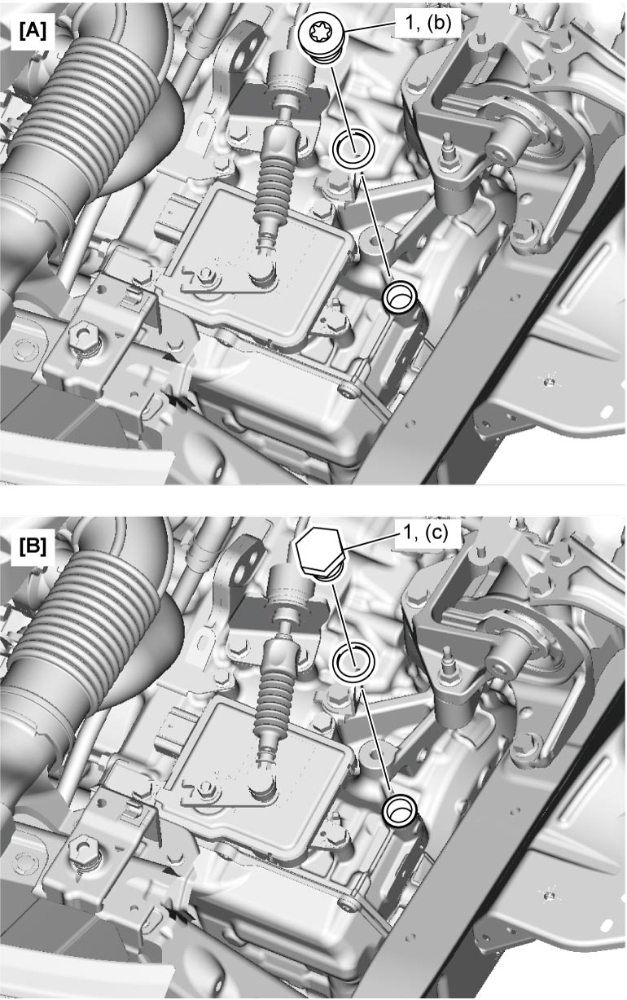
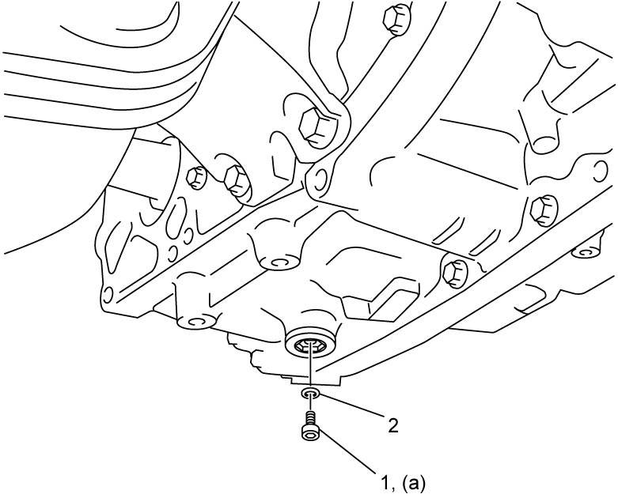

5A
| ATF Level Check |
NOTICE:
Failure to take the following precautions when checking the ATF may cause failure of the A/T.
•Do not use any fluid other than the specified ATF. Use of any other fluids may cause juddering or other faulty conditions.
•Avoid overfilling the A/T. If the A/T is filled with excessive fluid, the fluid can foam and flow out through the breather.
The resulting loss of fluid may cause slippage and failure of the transaxle.
•Use only lint-free paper for wiping. Do not use cloth or rags.
•Do not reuse ATF.
•Avoid overfilling the A/T. If the A/T is filled with excessive fluid, the fluid can foam and flow out through the breather.
The resulting loss of fluid may cause slippage and failure of the transaxle.
•Use only lint-free paper for wiping. Do not use cloth or rags.
•Do not reuse ATF.
NOTE:
•Perform ATF level check before checking any service on A/T.
•Do not replenish or drain ATF before each test.
•Do not replenish or drain ATF before each test.
1)Place vehicle on a level surface.
2)With select lever in P range, remove ATF over flow plug (1) and drain ATF.
3)If ATF does not come out, perform the following procedure.
a)Remove battery and battery bracket.
•M16A model: 
•K14C model:
•K14C model:
 "Expand image")
 "Expand image")
4)Install ATF over flow plug (1) and tighten it to specified torque.


 "Expand image")
5)Remove battery and battery bracket.
•M16A model:
•K14C model:
•K14C model:
6)Remove filler plug (1) and replenish ATF approx. 0.5 liter (1.06 / 0.88 US/Imp. pt.).
7)Install ATF filler plug with new O-ring and tighten it to specified torque.
ATF filler plug (hexagon head) (c): 37 N·m (3.8 kgf-m, 27.5 lbf-ft)
Tightening torque
ATF filler plug (Torx®) (b): 39 N·m (4.0 kgf-m, 29.0 lbf-ft)ATF filler plug (hexagon head) (c): 37 N·m (3.8 kgf-m, 27.5 lbf-ft)

 "Expand image")
| [A]: | Torx® type | [B]: | Hexagon head type |
8)Install battery and battery bracket.
•M16A model:
•K14C model:
•K14C model:
9)With ignition “OFF”, connect SUZUKI scan tool to DLC (1).

 "Expand image")
10)Start engine and display “Data List” mode on SUZUKI scan tool.
11)Drive vehicle so that “ATF temperature” reaches 65 °C (149 °F).
12)While keeping engine idling, depress brake pedal fully. Move shift select lever from P to D, maintaining for 2 seconds or longer in each position. Repeat this process twice.
13)Repeat Step 12) once.
14)Remove ATF over flow plug.
15)Check that ATF comes out. If ATF does not come out, go to Step 5).
16)Install ATF over flow plug (1) with new O-ring (2) and tighten ATF over flow plug to specified torque.

 "Expand image")
17)Set ignition “OFF”, and disconnect SUZUKI scan tool from DLC.